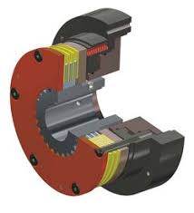
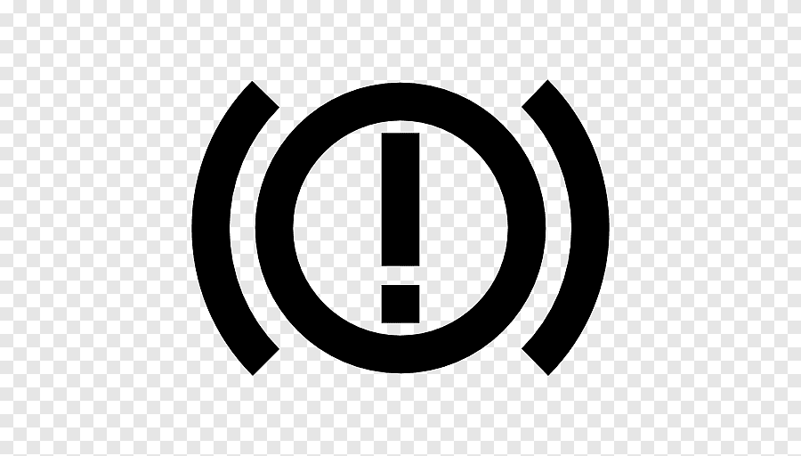

Introducción
El Sistema
de Frenos
En esta maquinaria se utiliza un sistema de freno hidráulico que asegura un frenado totalmente seguro durante el trabajo a realizar. Opera transformando la fuerza mecánica del operador en presión hidráulica para activar la detención.
La retroexcavadora Komatsu WB93R-5 destaca específicamente por utilizar frenos de discos múltiples bañados en aceite (frenos húmedos), lo que permite una disipación térmica superior y reduce el desgaste.

Komatsu WB93R-5
Análisis Técnico de Maquinaria
Desglose de Hardware
Tabla de Componentes
| Componente | Referencia | Simbología | Descripción Técnica |
|---|---|---|---|
| Pedal de Freno |  |
 |
Entrega al operador el control total a la hora de frenar la maquinaria. |
| Depósito / Tanque |  |
 |
Acá se acumula todo el líquido hidráulico necesario para el circuito. |
| Bomba Hidráulica |  |
 |
Mantiene el fluido en constante movimiento presurizado. |
| Acumuladores |  |
 |
Almacenan energía, reciben el impacto de la presión y proporcionan fluido hidráulico en caso de algún problema. |
| Filtros |  |
 |
Estos protegen a los demás componentes de cualquier partícula que pueda ser dañina para el sistema. |
| Electro válvula |  |
 |
Regula de manera precisa el caudal de los fluidos a través del circuito. |
| Cilindro de freno |  |
 |
Este ejecuta físicamente la acción que queramos realizar en el sistema. |
| Discos de Freno |  |
 |
Ubicados en las ruedas, reciben la fricción de las pastillas de freno para detener el equipo. |
| Disco Estacionamiento |  |
 |
Inmoviliza el equipo de forma mecánica mediante una palanca y un sistema de bloqueo. |
Seguridad y Medio Ambiente
Normativas
Industriales
Medidas de Seguridad
Utilizar herramientas adecuadas. Trabajar estrictamente con el equipo apagado. Revisar fugas hidráulicas antes de trabajar.
Precaución con Componentes
No mezclar distintos tipos de líquido de frenos. Verificar minuciosamente el estado de discos, pastillas y mangueras.
Cuidado Medioambiental
Disponer correctamente el líquido de frenos usado en contenedores especiales. No botar aceites o fluidos al suelo. Mantener el área limpia.
Marco Legal Aplicado
Ley 19.300: Protege el medio ambiente y regula residuos contaminantes.
D.S. N°148: Regula el manejo de aceites y líquidos peligrosos en talleres.
D.S. N°594: Establece normas de seguridad e higiene en talleres mecánicos.
✅ Aplicación Correcta

Taller ordenado y uso completo de EPP.
❌ Aplicación Incorrecta

Derrame de fluidos y omisión de seguridad.
Interpretación de Planos
Plano Hidráulico
del Circuito
Identificación esquemática de los componentes, los subsistemas operativos y la delineación exacta de las vías de alta y baja presión.
Alta Presión (Línea de trabajo)
Circuito principal desde bomba hasta cilindros de freno en ruedas traseras.
Baja Presión / Retorno
Línea de retorno al tanque o depósito desde la válvula de control principal.
Subsistema Acumuladores
Acumuladores en paralelo. Garantizan frenado de emergencia y absorben picos de presión.
Componentes Identificados en Plano
1. Bomba Hidráulica | 2. Válvula de Control Principal | 3. Acumuladores de Nitrógeno | 4. Cilindros Actuadores | 5. Depósito.